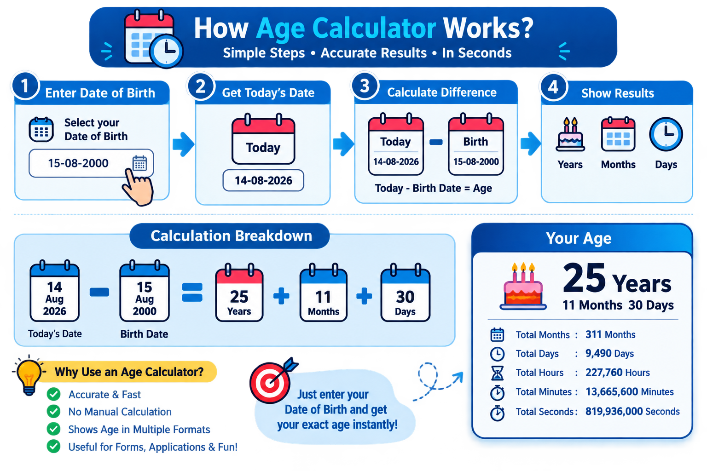

Total Days
—

Calculate your exact age in years, months, and days instantly. Use our free online age calculator for accurate results in seconds — no sign-up required.
Exact Age
—
—
—
— Days

How Does the Age Calculator Work?Our age calculator compares your date of birth with today's date to calculate the difference between the two dates. It automatically handles different month lengths and leap years to provide an accurate age calculation.
How to Calculate Your Age
The result can show your age in years, months, and days, making it easier to understand exactly how much time has passed since your birth date.
What Can You Calculate?
Our Age Calculator can help you find:
Why Use an Online Age Calculator?
Calculating your exact age manually can be confusing because months have different numbers of days and leap years can affect the calculation. An online age calculator performs these calculations automatically and gives you the result in seconds.
Accurate Age Calculation
The calculator uses your date of birth and the selected current date to determine the difference between the two dates. Instead of manually counting months and days, you can get the result instantly with a simple date input.
Age Calculator for Different Purposes
An age calculator can be useful in many everyday situations, including:
What is a Birthday?
How Birthdays Are Celebrated
Why Birthdays Are Special
Explore Your Birth Date
Welcome to the Pepstudio Age Calculator — a fast, free, and accurate tool designed to determine your exact chronological age down to the precise year, month, and day!
Calculating exact age involves more than simple subtraction because month lengths and leap years vary. Here is how our algorithm computes precision results:
Computes the raw delta between year, month, and day components of your birth date and the reference date.
Automatically adjusts for 28, 29, 30, or 31-day months when borrowing days during subtraction.
Factors in quadrennial leap years (February 29th) to ensure day count precision across decades.
Our Age Calculator is 100% accurate. It uses exact Gregorian calendar algorithms that correctly account for leap years, leap centuries, and varying month lengths.
Leap years add an extra day (February 29) every four years. Our algorithm automatically factors in these leap days when calculating your total days and weeks lived.
Yes! Use the "Age at Date" optional field to select any historical or future date to find out how old you were or will be on that specific day.
Age in years measures completed annual calendar revolutions around the sun, while total days measures the absolute continuous number of 24-hour periods lived since your birth date.
Over an average 70-year lifetime, a human heart beats over 2.5 billion times without taking a single break!
If you are 25 years old on Earth, you are over 100 years old on Mercury and only 13 years old on Mars due to orbital speeds!
People born on Feb 29th are called "leaplings" and technically celebrate an official calendar birthday once every four years.
You spend approximately 10% of your waking hours with your eyes closed due to blinking throughout your life!
Check out our other fast, free, and accurate online calculation tools:
Accuracy Disclaimer: This Age Calculator is provided for general informational and calculation purposes. While designed for maximum calendar precision, official age verifications for legal documents should always refer to official birth certificates.